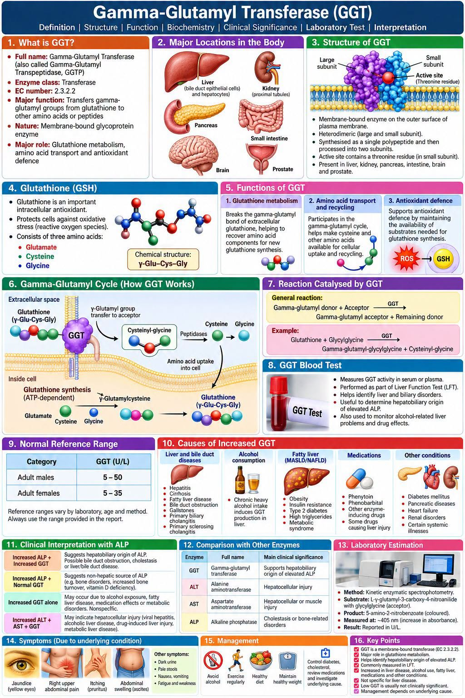

Alcohol metabolism
#alcoholHD #nadHD #glutathioneHD #taurineHD #nacHD #bvitaminsHD
An infographic explaining that over 90% of ethanol is processed in the liver, where alcohol dehydrogenase converts it to acetaldehyde, a far more toxic molecule, and the pathway consumes cofactors. Louis tags NAD, glutathione, taurine, NAC and B vitamins.
Alcohol metabolism
#alcoholHD #nadHD #glutathioneHD #taurineHD #nacHD #bvitaminsHD
Alcohol metabolism and why a few drinks linger longer than you think...
Your body processes >90% of ethanol in the liver, but the path creates toxic byproducts and drains key cofactors.
1️⃣ Step 1: Ethanol → Acetaldehyde
Alcohol dehydrogenase (ADH) converts ethanol to acetaldehyde, a far more toxic molecule.
💡 Example: Acetaldehyde is 10–30x more toxic than ethanol and drives hangovers.2️⃣ Step 2: Acetaldehyde → Acetate
Aldehyde dehydrogenase (ALDH2) detoxifies acetaldehyde to acetate. Genetic variants slow this step, causing the flush response.
💡 Example: ~30–50% of East Asians have ALDH2 deficiency, leading to red flushing and higher cancer risk.3️⃣ Step 3: Acetate → Acetyl-CoA
Acetate is converted into Acetyl-CoA for energy, but excess NADH shifts it into fat storage.
💡 Example: Chronic drinking promotes fatty liver because metabolism favors lipogenesis.4️⃣ Cofactors Required
Both ADH and ALDH consume NAD⁺, creating a redox imbalance. Zinc is essential for ADH function, and glutathione helps mop up aldehyde damage.
💡 Example: Heavy drinking depletes NAD⁺ and glutathione, impairing energy metabolism and antioxidant defense.5️⃣ Systemic Effects
Excess NADH raises lactic acid, blocks fat burning, and impairs gluconeogenesis. Acetaldehyde damages DNA and mitochondria.
💡 Example: This is why alcohol can cause both hypoglycemia and rapid fat gain.6️⃣ What Can Help?
No hack accelerates clearance beyond ~1 drink/hour, but cofactors can reduce collateral damage:Taurine supports acetaldehyde detox and membrane stability.
NAC restores glutathione.
B1, B3, B6 support alcohol dehydrogenase activity.
💡 Example: NAC + taurine supplementation has been shown to blunt acetaldehyde toxicity in experimental studies.7️⃣ The Takeaway
Alcohol metabolism is an NAD⁺-draining, oxidative stress-driven process. You can’t outrun liver capacity, but you can support cofactors that protect cells.
💡 Example: Think of alcohol clearance like a one-lane road. You can’t make it faster, but you can repair the guardrails.Your liver clears alcohol on its own schedule. Zinc, taurine, glutathione, and B-vitamins help reduce the metabolic fallout, but nothing cancels the 1-drink-per-hour rule.
Louis warns that antioxidants including vitamin C, N-acetyl-cysteine and glutathione can cause false high readings on glucose meters and continuous glucose monitors. Lab blood tests are not affected.

Louis shares a summary of alcohol metabolism, in which more than 90% of ethanol is processed in the liver and converted to the more toxic acetaldehyde before ALDH2 detoxifies it. He advises keeping any alcohol to small amounts.

Louis calls this the most impressive Alzheimer's supplement trial he has seen. A cocktail of four metabolic activators gave 29% cognitive improvement vs 14% on placebo over almost 3 months in a randomized, double-blind phase II trial.
Summarizes a video on whether coronary calcium can be reversed. Tom's score fell from 66 to 42 (36%) between 2018 and 2021 amid many simultaneous changes (keto diet, fasting, supplements, less exercise, weight gain), and he admits he does not know which mattered.

A shared educational infographic explains GGT as an enzyme in glutathione metabolism and a marker used with liver function tests to assess liver and bile duct disorders. General lab-test explainer without study data.

Louis explains glutathione is large and poorly enters cells, even liposomally. A Nature study shows some cancer cells can use extracellular glutathione as a cysteine source.